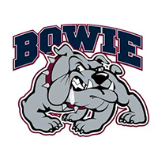
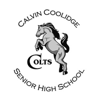
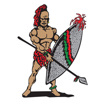

- Head Coach: Cedric Holbrook
- Players to watch:
6'5 Jr. G Quinton Drayton
6'3 Jr. G Jalen Robinson
Bowie High School (Bowie, MD)
- Head Coach: Vaughn Jones
- Players to watch:
6'5 So. G James Hampton
6'8 Jr. F William Vedder
6'2 Sr. G B.J. Hill
Calvin Coolidge High School (Washington, DC)
- Head Coach: Brendan O'Connell
- Players to watch:
6'5 Jr. G Naji Marshall
6'5 Sr. F Victor Okafor
Eleanor Roosevelt High School (Greenbelt, MD)
- Head Coach: Trey Mines
- Players to watch:
6'7 Sr. F Antwan Walker
6'5 So. G Kiyon Boyd
5'9 So. G Derquan Washington
H.D. Woodson High School (Washington, DC)
- Head Coach: James Pope
- Players to watch:
6'3 Sr. G Daryl Bones
6'7 Sr. F Kierell Green
6'8 Jr. F Stefon Fisher
5'10 Sr. G Justin Milstead
IDEA Public Charter School (Washington, DC)
- Head Coach: Ali Foster
- Players to watch:
6'4 Sr. G Rinardo Perry
McKinley Tech. Education Campus (Washington, DC)
- Head Coach: Rob Nickens
- Players to watch:
6'0 Jr. G Brandon Howell
6'5 Jr. F Donald Brewer
6'7 Jr. F Deon Savage
Theodore Roosevelt High School (Washington, DC)
- Head Coach: Lafayette Dublin
- Players to watch:
6'3 Sr. G Anwar Henson
5'9 Sr. G Desmond Rene